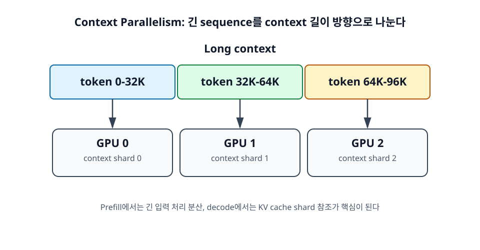

14장. Context Parallelism¶
Context Parallelism은 long-context 추론을 위한 병렬화 축이다. Data Parallel이 요청을 나누고, Tensor Parallel이 layer 내부 계산을 나누고, Pipeline Parallel이 layer를 나눈다면, Context Parallel은 sequence length 방향을 나눈다.

학습 목표¶
- Context Parallel이 sequence length 방향을 나누는 방식임을 이해한다.
- Prefill Context Parallel과 Decode Context Parallel을 구분한다.
- Long-context serving에서 CP가 필요한 이유를 설명한다.
14.1 Context Parallel의 정의¶
Context Parallel은 긴 token sequence를 여러 GPU가 나누어 처리하는 방식이다. 예를 들어 96K token context를 세 GPU가 각각 32K token shard로 나누어 담당할 수 있다. 목적은 long-context에서 커지는 계산과 KV cache 부담을 분산하는 것이다.
14.1.1 Sequence length 방향을 나눈다¶
일반적인 TP는 hidden dimension이나 weight matrix 방향을 나눈다. CP는 이와 달리 sequence length 방향을 나눈다. 즉 token 위치의 범위를 나누어 각 GPU가 context의 일부를 담당한다.
이 차이는 중요하다. TP는 큰 모델 weight와 layer 계산을 겨냥하고, CP는 긴 context와 KV cache를 겨냥한다.
14.1.2 긴 context를 여러 GPU가 나누어 처리한다¶
긴 문서를 하나의 GPU가 모두 처리하지 않고 여러 GPU에 나누면, 각 GPU가 맡는 context shard의 길이가 줄어든다. Prefill에서는 긴 입력 처리 부담을 나눌 수 있고, decode에서는 KV cache 저장과 attention 계산을 shard 단위로 나눌 수 있다.
다만 attention은 전체 context를 참조해야 하므로 shard 결과를 정확히 합치는 과정이 필요하다. 따라서 CP도 통신 비용을 만든다.
14.1.3 Long-context serving을 위한 병렬화다¶
짧은 context에서는 CP의 이득이 작을 수 있다. 통신 overhead가 더 크게 보일 수 있기 때문이다. CP는 context가 매우 길고 KV cache가 memory bottleneck이 되는 상황에서 의미가 커진다.
즉 CP는 모든 workload에 적용하는 기본 옵션이라기보다, long-context serving을 위한 특수한 병렬화 축에 가깝다.
14.2 Prefill Context Parallel¶
Prefill Context Parallel은 긴 입력을 여러 GPU가 나누어 처리해 TTFT를 줄이려는 접근이다. Prompt가 매우 길 때 prefill 계산과 memory access가 커지므로 이를 분산한다.
14.2.1 긴 입력을 여러 chunk로 나누어 처리한다¶
긴 prompt를 token 범위별 chunk로 나누고, 각 GPU가 일부 chunk를 담당한다. 이때 causal attention의 정확성을 유지하면서 전체 attention 결과를 계산해야 한다. 단순히 문서를 세 조각으로 잘라 독립 요약하는 것과는 다르다.
모델 입장에서는 전체 sequence의 attention 결과가 일관되어야 한다.
14.2.2 TTFT를 줄이는 데 목적이 있다¶
Prefill이 긴 요청에서는 TTFT가 사용자 경험을 크게 좌우한다. Prefill CP는 prompt 처리 시간을 여러 GPU로 분산해 첫 token까지의 시간을 줄이는 데 목적이 있다.
다만 GPU 간 통신과 synchronization이 필요하므로, 짧은 prompt에서는 오히려 overhead가 커질 수 있다.
14.2.3 Attention 결과를 정확히 합쳐야 한다¶
Attention은 softmax normalization을 포함한다. Sequence를 shard로 나누어 계산할 때도 전체 sequence 기준의 attention 결과와 일관되게 합쳐야 한다. 이 때문에 CP 구현은 단순한 chunk 병렬 처리보다 복잡하다.
입문 단계에서는 "context를 나누되 attention 결과는 전체 context 기준으로 맞춰야 한다"는 점을 기억하면 충분하다.
14.3 Decode Context Parallel¶
Decode Context Parallel은 decode 단계에서 KV cache를 여러 GPU에 나누어 저장하고, 새 token의 Query가 각 shard를 참조하게 하는 방식이다. 이 책의 핵심 주제 중 하나인 DCP는 다음 장에서 더 자세히 다룬다.
14.3.1 Decode 단계의 KV cache를 나누어 저장한다¶
긴 context의 KV cache를 모든 GPU가 중복해서 들고 있으면 메모리 낭비가 크다. DCP는 KV cache를 context shard별로 나누어 저장해 각 GPU의 memory 부담을 줄일 수 있다.
특히 TP를 사용할 때 KV cache가 중복되는 구조라면, long-context에서 memory pressure가 커질 수 있다. DCP는 이런 문제를 완화하는 방향이다.
14.3.2 각 GPU가 자기 shard에 대해 partial attention을 계산한다¶
새 token의 Query는 각 GPU의 KV shard에 대해 attention을 계산한다. 각 GPU는 자기 shard 기준의 partial attention 결과를 만든다. 이후 partial 결과를 통신으로 합쳐 최종 attention output을 만든다.
이 구조는 memory를 나누는 대신 통신을 요구한다. 따라서 long-context에서 memory 이득이 통신 비용보다 클 때 효과적이다.
14.3.3 결과를 합치는 통신 비용이 발생한다¶
CP와 DCP는 결과 통합이 필요하다. 통신 비용이 크면 latency가 늘 수 있다. GPU 간 interconnect가 느리거나 context가 충분히 길지 않다면 이득이 제한적일 수 있다.
따라서 Context Parallel은 long-context가 핵심 workload인지, KV cache가 실제 병목인지, interconnect가 충분한지 확인한 뒤 적용해야 한다.
정리¶
Context Parallelism은 sequence length 방향을 나누는 병렬화다. Prefill CP는 긴 prompt 처리와 TTFT 개선을 겨냥하고, Decode CP는 긴 KV cache를 나누어 decode memory pressure를 줄이는 데 초점이 있다. Long-context serving에서는 중요한 도구지만, 통신 비용 때문에 모든 상황에서 이득이 나는 것은 아니다.
점검 질문¶
- Context Parallel은 Tensor Parallel과 어떤 축을 다르게 나누는가?
- Decode Context Parallel은 어떤 메모리 문제를 완화하는가?
다음 장으로¶
다음 장에서는 Decode Context Parallel을 더 집중적으로 살펴본다. KV cache shard, partial attention, 통신 trade-off를 구체적으로 정리한다.